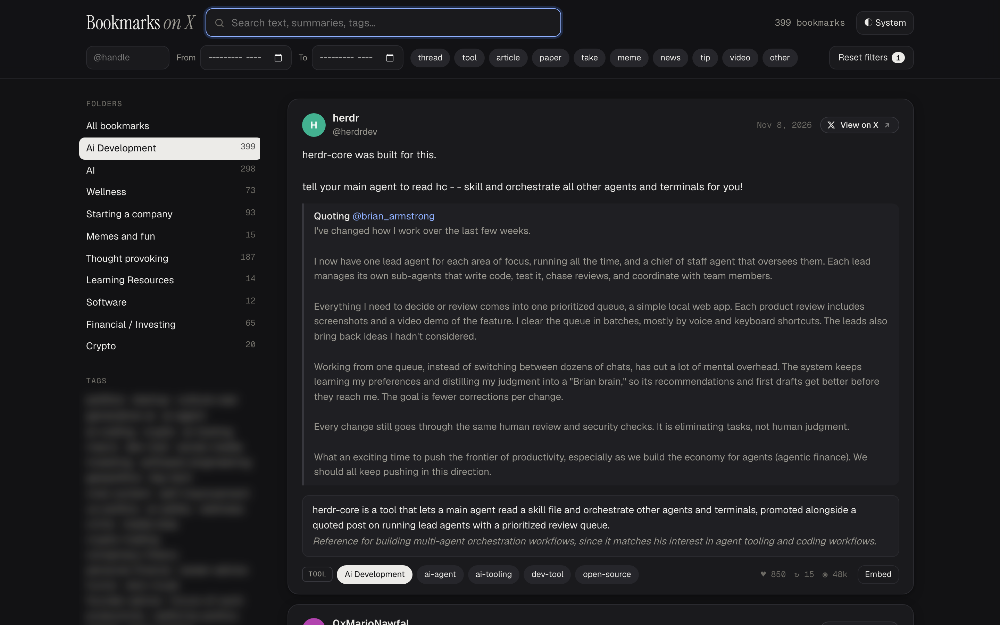

X bookmarks viewer
A searchable, auto-tagged viewer for my X bookmarks, synced from my account.

The problem
I'm a prolific X user, but going back through my saved bookmarks is a chore. X shows them as one long feed with no real search. I used pro.x.com for a while, and even there the UI falls short.
What I built
My own bookmarks viewer, synced from my X account. It holds about 6,200 bookmarks, and I can search all of them at once: the post text, a one-line summary of each post, and its tags.
- Search, then narrow by folder, tag, author, kind of post (thread, tool, paper, and so on), or date range. The filters live in the URL, so any view is a link.
- A light LLM, Claude Haiku, reads each new bookmark on sync. It writes the summary, picks tags from a fixed vocabulary, and labels the kind of post.
- A sync pulls new bookmarks and my X folders, and drops the ones I've removed.
- An MCP server gives Claude Code the same library, so an agent can search my bookmarks or write a digest of a topic.
Stack
Bun and TypeScript, with SQLite and its FTS5 full-text search. The viewer is one HTML page on a small local JSON API. A CLI, xbm, runs the sync, the tagging, and the server.